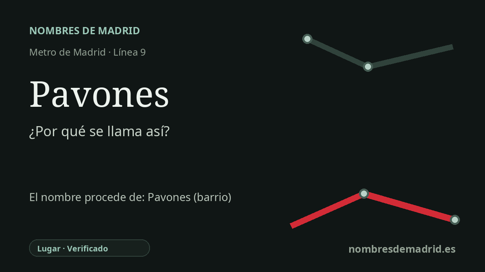

Publicado el · Investigación de Nombres de Madrid · Cómo verificamos cada origen · 6 fuentes consultadas
Respuesta rápida
Pavones toma su nombre del topónimo local Pavones, conservado hoy en el barrio y en la calle de la Hacienda de Pavones, en Moratalaz. El nombre procede de una antigua finca agrícola, documentada como Pavones o Pabones, cuyos terrenos quedaron absorbidos por la expansión urbana del este de Madrid.
La historia del nombre
La estación de Pavones toma su nombre del topónimo local Pavones, en Moratalaz. La referencia urbana inmediata es el entorno de la calle de la Hacienda de Pavones y el barrio de Pavones, pero el nombre es anterior tanto a la estación de Metro como al barrio administrativo actual.
El origen más profundo está en la Hacienda de Pavones, una finca agrícola documentada también con la grafía Pabones. Un decreto del BOE de 1964 describe una hacienda llamada Pavones o Pabones, situada en terrenos de los antiguos términos municipales de Vallecas y Vicálvaro y vinculada a parajes como Encomienda de Palacios, Pavones, La Marroquina, La Tacona y El Horcajo.
Los anuncios del siglo XIX y la investigación histórica local llevan la finca al menos a comienzos del ochocientos. Un anuncio de venta de 1831, citado en trabajos históricos sobre la zona, indica que la hacienda se había titulado antes Palacios y Valderribas y que reunía centenares de fanegas de tierra de labor. A mediados del siglo XIX aparece relacionada con Antonio de Serradilla y Alcázar, y la Gaceta de 1856 todavía habla de una hacienda titulada Pabones en el término de Vallecas.
El paisaje que hay detrás del nombre era rural: tierras cerealistas, casa de labor, elementos de agua, caminos y, más tarde, segregaciones y expropiaciones. El decreto de 1964 resulta especialmente útil porque retrata la antigua finca justo cuando el Moratalaz moderno estaba transformándose, con edificios, estanques, pozos o galerías, caminos y el paso del ferrocarril de vía estrecha.
La estación de Metro se abrió en la línea 9 el 31 de enero de 1980, cuando entró en servicio el primer tramo Sainz de Baranda-Pavones. No consta un decreto específico de denominación de la estación, por lo que la interpretación mejor respaldada es que la estación se llama así por el topónimo local Pavones, conservado en la calle y en el barrio, y en última instancia arraigado en la antigua Hacienda de Pavones.